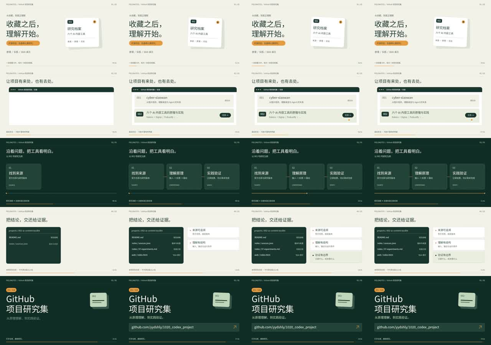

作者分享的提示词
原链接是提示词帖。已核对的主帖只有提示词附图，未附源码库或成片，不能拿宣传评价代替实际效果。
作者主帖 ↗实践与理解 / 2026.10.23
随着模型自主能力提升，通用步骤提示的额外收益可能减少。
更值得表达：受众与目标、情绪、风格、氛围、动画目的，以及怎样判断效果。
本次两组 70 / 67.5，评审偏好相反。
跨代模型的收益变化仍待验证。
RESEARCH / THE WHOLE PICTURE
这是完整研究入口。
网页承接材料，影片才是动效产物。
先看匿名成片，再看盲评分与耗时 ↓。这次新实验与历史 V1/V2/V3 分开记录。历史 V3 仍停留在第二轮待返修，第三轮只有准备工作；新增实验不代表旧版已经通过验收。
CONTROLLED TRIAL / 01
一次新的配对实验。
先看匿名成片，再揭晓组别与评分。
原文组 = 共同要求 + 未改写的原提示词；明确需求组 = 相同目标、素材和质量标准，制作方法自主决定。两组串行执行，均不读取旧版实现。时间预算包含内部评审和渲染；公共准备与最终盲评另列。
讨论后的理解：从提示词里提取目标、感受、动画目的与验收标准 ↓
RESULT / 本次观察
| 比较项 | 影片 X | 影片 Y |
|---|
耗时由协调端观察器记录，包含调度、输入阅读、生成、内部评审、渲染及重试；每组上限 1,200 秒。实际 token、金额、服务端模型快照与采样种子无法取得，不宣称等 token 或等费用。
两组接收同一批冻结的真实产品资料、本地字体和官方参考片；不借用历史影片或实现。相同工具额度意味着两组都可调用独立评审，是否、何时调用由各自输入决定。预算到期即封存，未完成也算结果。
正在读取…
上面的共同任务与运行规则，加上作者原提示词全文。原始源文件保持 3,821 字符 / 9,143 字节；拼接输入保存时仅转为 Windows 换行，正文逐字相同。按统一 LF 换行计，原文组 5,845 字符，明确需求组 2,079 字符。磁盘原始 SHA 与换行归一化校验分开记录。原文不在本站全文转载，原始文件及拼接输入均私存。查看原帖嵌入与来源说明。
同一父配置继承不等于已锁定供应端模型版本。文件隔离靠代理指令执行，未使用 OS 沙箱。本次预提供资料，比较的是制作阶段；不包含从零搜索素材的能力。每组只有一次生成，不能推断长提示词在所有任务上更强或更弱。
OUR UNDERSTANDING / 2026.10.23
基于本次实践与后续讨论的整理。
这里包含使用建议，也标明尚未验证的推测。
包含真实成片抽帧、对照结果、情绪与风格等六项要求、表达模板与证据边界。点击图片打开高清原图。
目前形成的理解
给谁看，希望观众理解什么、感到什么、最后愿意做什么。情绪、氛围和动画方向都围绕这个目的展开；同时说明怎样才算做好。
分析、计划、检查、迭代仍然有用。如果模型本来就能做好这些步骤，重复提醒的增量收益可能有限；具体收益需要看实际执行和结果。
受众、内容重点、情绪变化、氛围和审美参考包含任务独有的信息。模型能力更强，也需要知道你希望作品产生什么效果。
明确静音能否理解、文字能否读完、事实是否可信、动作是否解释关系。评审意见应对应实际画面与修改；步骤数量和文字篇幅本身不能证明质量。
怎样简化，仍保留想要的效果
这些是本次讨论形成的使用建议；下方表达示例尚未通过新一轮对照验证。简化的对象是冗余指令，独立评审与真实验收仍按任务需要执行。
把目的和表现连起来
“连续变形”说明采用什么表现方式；“让研究过程连贯、每一步都有依据”说明它为什么值得采用。两者一起表达，才能判断动作是否服务内容。
以下是讨论后形成的表达示例，尚未用于新一轮制作。它不是作者原文，也不是上方两组的实际输入。
为开发者制作一条 20 秒产品介绍动画，让观众理解从收藏项目、查明原理、核对来源到开展实验的过程。情绪从“收藏后仍然困惑”逐步走向“知道下一步怎么做”的掌控感。采用暖白与深绿、清晰字级和克制的平面图形，营造安静、清晰、可信的氛围。让同一张收藏卡展开成原理图，原理节点对应源码，再进入实验记录；每次动画都解释一步关系。验收时检查：静音可理解主线，关键文字有足够阅读时间，示例与真实结果清楚区分，连续变化保持对象和语义可追踪。
“高级、震撼、流畅”等词可以表达偏好；补上感受的变化、注意力的位置和动作要解释的关系，会让要求更具体。实现方法可以交给模型选择，必要的技术限制、预算和交付格式仍应明确。
明确需求组 70/90，原文组 67.5/90；两位评审偏好相反。对照组也获得了共同质量要求。原文组未在时限内完成全部评审流程，所以本次结果只覆盖固定预算下的增量收益。查看成片、评分与限制 ↑
如果模型能自主完成更多通用步骤，这些提醒的额外价值可能减少。本次没有比较不同代际模型，也没有验证无限制执行原文的最终效果，不能据此宣布长提示词普遍失去价值。
相关官方指导：OpenAI 建议对推理模型使用清晰直接的提示，明确目标和约束；某些通用思考指令未必提升效果。这一建议并不证明上述跨代趋势。阅读官方指导 ↗
PROMPTS / SOURCE & EXECUTION
作者原文、另写指令、补充 brief，
三者明确区分。
V3 直接读取作者完整原文，具体任务只填在独立 brief中；原文的来源与完整性见来源清单。原文全文请在作者原帖阅读，本站不全文转载第三方长文。下方留存的是 V2 为本项目另写的执行提示词，它不是 V3 使用的原文。
原文约束素材真实性、内容交接、声音、独立评审与交付。它本身不包含这次演示对象的具体资料。下面的结构解读是本站分析，不冒充原文。
原始输入：3,821 字符 / 9,143 UTF-8 字节；通过对应帖子转存接口取得，直连 X 返回 403。完整性 SHA 见来源清单，未独立认证转存内容与作者当前版本完全一致。
原文保持独立；brief 填研究集主题、开发者观众、20 秒横屏、事实来源与落版入口。音乐和音效的相对音量冲突，按原文允许的 brief 优先级明确处理。
“原文已读取”是输入事实；“原文全部执行完毕”和“质量全部通过”仍未成立。
通过 X 官方嵌入展示，本站不复制发布第三方全文。外部网络受限时，请使用上方原文入口；不会以本站改写文本冒充原文。
V3 / ORIGINAL PROMPT RUN
原文保持原样，brief单独提供。
结果、失败项和评审记录放在一起。
此前只有 V1、V2 两个作品。“三轮渲染”是 V2 内部修订后导出三次，不是第三个作品。这里的 V3 才是本轮新增的原文执行实验；V3 自己也可能经过多次评审和渲染。
五个独立场景与重复遮罩。未完整执行原文创作要求。
补做连续变形，多轮修订；使用另行编写的项目指令，不能称作原文严格复现。
新执行代理直接读取未改写全文，从方案开始制作；按原文安排独立评审和迭代。
三版近似同步，默认仅听 V3。小字请使用“放大 V3”或下载原尺寸影片。
WHAT ACTUALLY HAPPENED
分镜退回、逐镜检查和整片复核分别留存。这里的轮次不是新增作品版本。
| 可核查项目 | V1 | V2 | V3 |
|---|---|---|---|
| 正在读取结果… | |||
低运动检测仅统计持续至少 0.5 秒的片段，更短的停滞不在该累计值中。像素变化不能证明动作有意义，也不代表导演或审美质量通过。
原文取自指定帖子的完整正文，共 3,821 个字符，作为独立输入保存。没有用 V2 的执行版替换原文。原帖直连返回403，本次通过对应帖子的转存接口取得正文；来源与完整性记录可以下载核查。
SHA-256：ab01c038ef3b71821bad85b2ddb45ca37891c5fa2d019adb59572de6bbfcb037
仅填任务字段；原文中音效应高于/低于音乐的矛盾，按其明确的 brief 优先规则，选择“音效低于音乐”。其他未达成项保留在报告中，不用修改 brief 来豁免。
以下是当前影片与流程的重点核查。完整 179 项底稿可下载，但它形成于早期、尚未完成最终签署，不代表 179 项全部通过。
正在读取逐条验收结果…
V3 / ORIGINAL SCORE
原文执行是本次的输入与过程约束；“全部质量标准通过”需要另外的证据。失败与无法核验也属于这次实验的真实结果。
查看原 V1 / V2 对比与记录 ↓HISTORICAL ANALYSIS / V1–V3
以下分析只针对历史三版。
新的同预算盲评另见公平对照 ↑
V3 第二轮全画面低运动累计 3.017 秒，V2 为 1.183 秒，采用相同 −50 dB、持续至少 0.5 秒的检测口径。V3 独立评审还发现遮字、重复标题与后段内容重复。增加流程和条款，并没有自动消除这些问题。
对应成片的独立报告 ↗V1 使用五镜与重复遮罩；V2 以档案、工作台和文档的连续变化组织画面；V3 重新采集真实页面、字体和 favicon，以工具卡与研究证据为主线。它们并非同一模板只换一句提示词。
V1 用 Canvas，V2/V3 用 SVG、resvg 与 FFmpeg。这里没有使用 Remotion。无论采用哪种渲染框架，构图、信息推进、动作交接和审美判断仍然需要实现与检查。
独立评审找到了虚构点击、名称遮挡、错误引用上下文、低运动与编码偏色。它提供了返修依据；本实验尚不能量化这些收益是否抵得上额外制作成本。
没有固定相同模型、预算、工具与随机条件进行多样本盲评。因此不能证明长提示词更优、短提示词更差，也不能用这些片子代表原作者展示过的结果。
REFERENCE / NOT A PROMPT OUTPUT
这是制作时另选的官方产品片，不是原作者成片，也不是此提示词生成的成果。参考片用输入、结果和文档形成推动叙事；V3 后半段仍较多停留在栏目展示，这是独立评审指出的差距。
在 Linear 官网观看参考片 ↗参考研究记录包含实际文件哈希、逐帧差分和获取限制。
查看参考研究记录 ↗以上是未完成工作，不是本页宣称已经实现的能力。
EVIDENCE / REVIEW & ITERATION
更新于 2026.10.23
当前成片：V3 / Round 02
原文完整性记录、真实产品采集、参考研究、三个候选方向与分镜。
前两次退回，第三次允许进入制作；这不等于影片可以发布。
样片验证渲染链路；八场首评均发现需返修问题，历史视频保留。
每轮先独立无声盲读，再做完整评审；两轮结论均为“再改一轮”。另有两次渲染中断，不计完成导出。
第三轮修订准备与编码探针已有记录；未发现第三轮完整 MP4。最终验收、完整执行闭环仍待完成。
V2 / CONTINUITY STUDY
同一真实场景 · 同样 20 秒 / 60 fps
第二轮制作投入更多，属于迭代对比，非受控 A/B。
播放时近似同步；拖动时间轴可将两版定位到同一帧。窄屏时两版上下排列。
不是整屏换场：星形和卡片共用轮廓；选中的行变成工作台；波形随原理图回到 README；文件从同一页背后展开，再归档。附属文字错开出现，光标走弧线，普通动作使用 3 个、高速转场使用 7 个时间样本合成运动模糊。
演示的是研究产品及 Kokoro 原理，未运行 Kokoro 模型。“实验待验证”保留在影片中。
| 检查项目 | V1 | V2 |
|---|---|---|
| 正在载入两版测量记录… | ||
低运动检测只衡量像素变化；它不能证明动作有意义。主体区域排除了页眉页脚。两版实现和迭代投入不同，不能把差异全部归因于提示词长度。
连续轮廓变形、对象交接和分层动效已实际完成，经过三次完整渲染及逐镜检查，修正了多处叠字和遮挡。最终独立总审认为可以作为连贯的二维实验片交付。
严格质量线仍未全部通过：全画面低运动累计 1.183 秒，部分过渡表现偏保守，全部感知声画峰值和音乐听感未完成验证。它展示了这次迭代能达到的效果，不能据此宣称达到商业参考水准或模型能力上限。查看逐项结论 ↓
V1 / ORIGINAL READING NOTES
保留第一轮阅读理解；它不是 V3 的执行依据。
阅读米开朗基杨分享的原帖 ↗
观众、目的、事实来源与交付格式。这些是任务信息，模型再强也不能凭空知道。
保留为硬约束先形成方案，再验证渲染，最后检查成片。把抽象目标变成能检查的中间产物。
保留为工作流程剪辑密度、运动方式、3D 与留白。经验规则需要服务内容，不能自动成为通用标准。
按场景选用音效音量的两处要求互相冲突；“版式不重复”和“始终运动”可能妨碍理解；独立评审有价值，但没有测量和视觉证据的“通过”仍然只是一句话。这些是本次阅读后的判断，不是原作者的结论。
这是第一轮的理解辅助，没有参与同条件 A/B 测试。V2 另写的执行指令留存在上方；V3 使用作者原文，此短版本没有参与 V3。
为「GitHub 项目研究集」制作 20 秒、16:9 的产品介绍片。 观众是希望从收藏工具走向理解和实践的开发者。 只引用提供的仓库资料，明确区分“已有内容”与“已验证能力”。 采用暖白与深绿的编辑设计，以一张研究卡片串联目录、原理和证据。 先给分镜和代表帧，先渲染 4 秒验证字体、编码与声音，再完成全片。 保留确定性时间轴；配乐和动作锚点同步；最终网址至少留出 3 秒阅读。 交付 MP4、纯音乐、抽帧图、来源、时间轴与检查记录。 请实际检查输出并记录缺陷。不要把指标合格写成审美优秀， 也不要把一次成功归因于提示词的长度。
V1 / ORIGINAL RECORD
以下为原 V1 影片与测量，不代表后续版本结论。
返回三版对比 ↑
从最终编码的 MP4 每秒抽取一帧（0.5、1.5 … 19.5 秒）。先静音看一遍：你能复述出它在讲什么吗？

这张图来自最终视频解码；每 0.2 秒的独立审片抽帧记录另见评审文件。
SOUND / 原创程序音乐
120 BPM，20 秒。和弦、节拍与短音效由代码合成，无人声；这不是对音乐生成模型的测试。
下载纯音乐 ↓字体使用 Noto Sans CJK SC；离线渲染固定文件哈希。视频中只有栅格化字形，网页阅读使用系统字体。
V1 / ORIGINAL FINDINGS
保留最初结果，避免用第二版覆盖历史。
V2 质量检查另见完整报告 ↗
正在读取实际测量记录…
机器检测发现多段低运动区间；四次相同遮罩没有实现内容连续变形。技术输出合格，不代表原提示词的动效质量线已经通过。
把细节用来约束真实与可交付，
把反馈用来提升表达与审美。